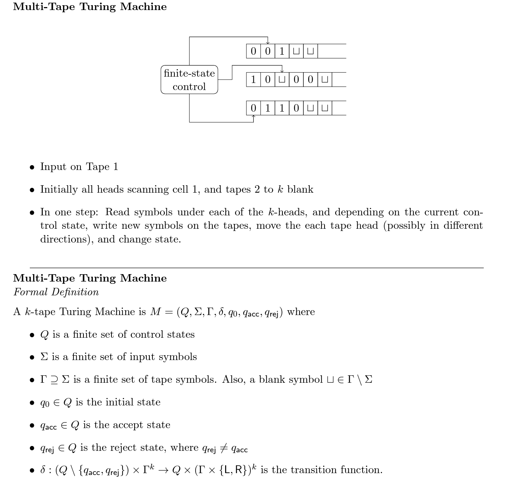
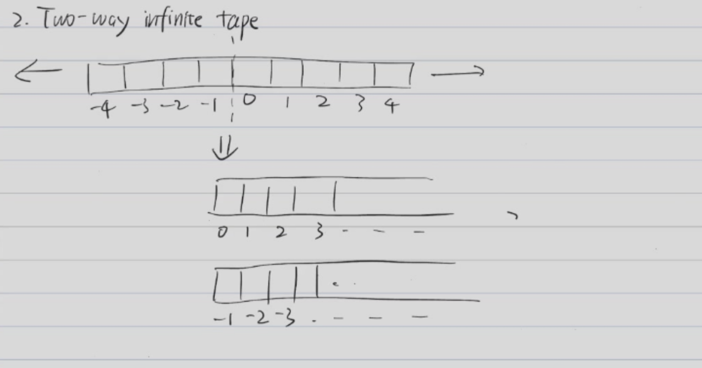
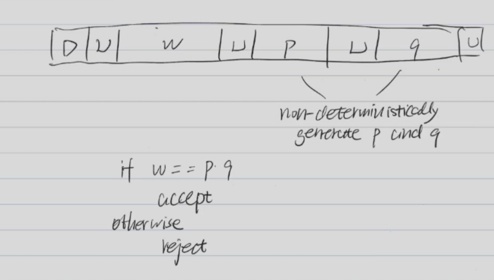
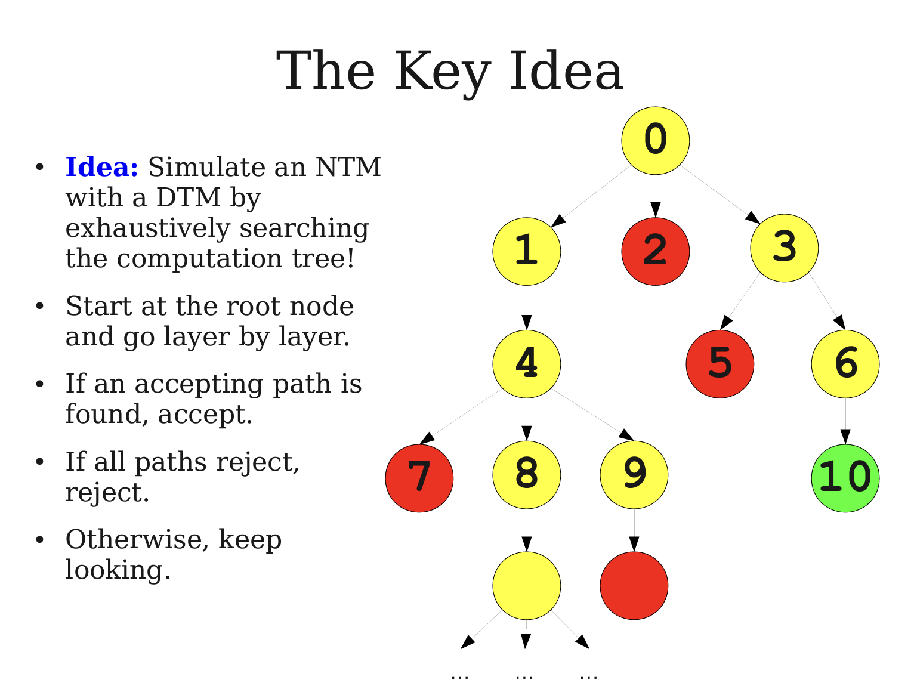
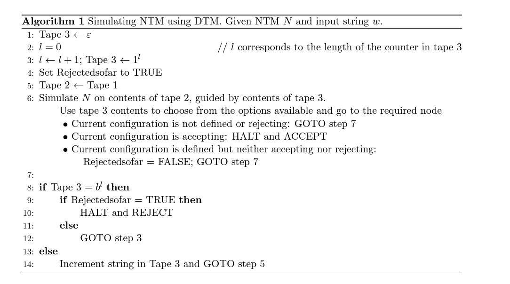
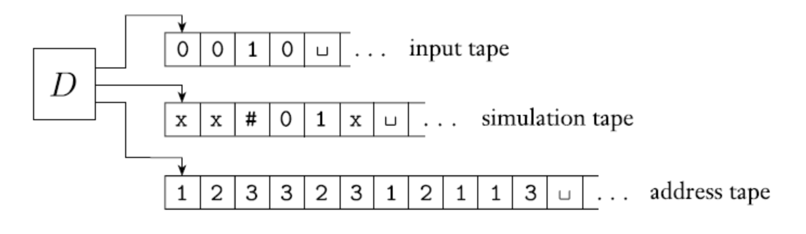
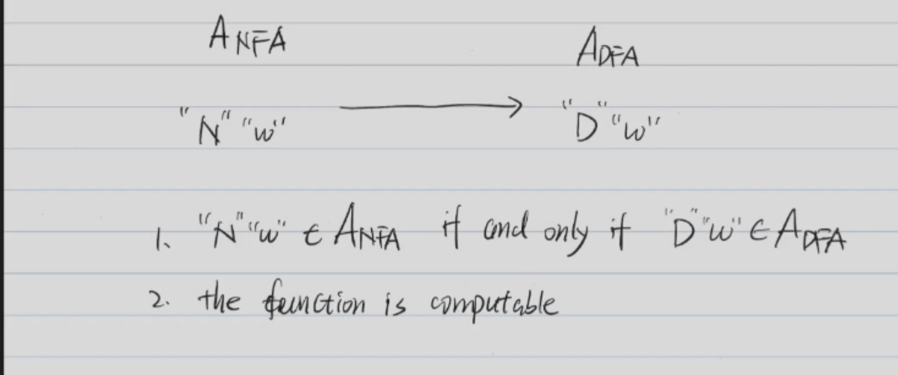

Lecture 5 - Turing Machine¶
Turing Machine¶
A Turing machine is a mathematical model of computation that defines an abstract machine. It was invented by Alan Turing in 1936. A Turing machine can simulate the logic of any computer algorithm, and is therefore the theoretical foundation of all modern computers.
A Turing machine is a 5-tuple \((K, \Sigma, \delta, s, H)\), where:
- \(K\) is a finite set of states.
- \(\Sigma\) is a finite set of symbols.
- s \(\in\) \(K\) is the start state.
- \(H\) \(\in\) \(K\) is the halt state.
- \(\delta\) is the transition function, which maps \((K - H)(\text{current state}) \times \Sigma\) to \(K (\text{next state})\times (\Sigma(\text{write})\cup\{L,R\}(\text{moving}))\).
The transition function \(\delta\) satisfies the following properties:
- \(\forall q \in K - H, \delta(q,\triangleright) = (p,L)\) for some \(p \in K\).
- \(\forall q \in K - H, \forall a \in \Sigma, if\ \delta(q,a) = (p,b)\), then \(|b| \neq 0\). -- Do something.
leftend \(\triangleright\) is a special symbol that is used to indicate the left end of the tape.
blank symbol \(\cup\) is a special symbol that is used to indicate the blank symbol.
configuration¶
A configuration of a Turing machine is a member of
- \(\Sigma - \{\triangleright,\cup\}\) is the last symbol that is not \(\cup\)
- {e} represents the following all symbols are \(\cup\).
We say \((q_1,\triangleright w_1a_1u_1) \vdash_M (q_2,\triangleright w_2a_2u_2)\) if
-
writing : \(\delta(q_1,a_1) = (q_2,a_2) and\ a_2 \in \Sigma - \{\triangleright\}\) and \(w_2 = w_1\) and \(u_2 = u_1\).
-
moving left : \(\delta(q_1,u_1) = (q_2,L)\) and \(w_1=w_2a_2\) and \(u_2 = a_1u_1\).
M halts if it reaches a halting configuration
Acceptance and Rejection¶
A Turing machine M accepts a string w if \((s,\triangleright\cup w) \vdash^* (yes,\triangleright\cup aw)\)
A Turing machine M rejects a string w if \((s,\triangleright\cup w) \vdash^* (no,\triangleright\cup aw)\)
Given a Turing machine M, we can define the language accepted by M as \(L(M) = \{w \in \Sigma^* | M \text{ accepts w}\}\).
- M seme-decides L
- But M does not decide L
- Adding a condition: If M halts on all inputs, then M decides L.
M decides a language \(L\) if M accepts all strings in L and rejects all strings not in L.
M semi-decides a language \(L\) if M accepts all strings in L and may loop (or reject) on strings not in L.
Reccursive Language¶
A language \(L\) is recursive if there exists a Turing machine that decides \(L\).
Every recursive language is recursively enumerable.
- Explanation: A language \(L\) is recursively enumerable if there exists a Turing machine that semi-decides \(L\).
Multi-tape Turing Machine¶

A multi-tape Turing machine is a Turing machine with multiple tapes. Each tape has its own head and can move independently.
Two-way Infinite Tape¶

Multi-head Turing Machine¶
A multi-head Turing machine is a Turing machine with multiple heads on a single tape.
2D-Tape Turing Machine¶
- Simulate a 2D-Tape Turing machine with a 1D-Tape Turing machine.
Random Access Turing Machine¶
- A Turing machine which can move to any position on the tape in a single step.
Example¶
- \(L = \{a^nb^nc^n|n\geq 0\}\) can be decided by a Turing machine.
Turing Machine Construction¶
Here is a high-level description of a Turing machine that can decide \( L \):
-
Check if the string consists of only \( a \)'s, \( b \)'s, and \( c \)'s: - The TM scans the input tape to ensure that it only contains \( a \)'s, \( b \)'s, and \( c \)'s in that order. If any other character is found, the machine rejects the string.
-
Match \( a \)'s, \( b \)'s, and \( c \)'s: - Start by marking the leftmost \( a \) and replace it with a special symbol (say \( X \)). - Then, scan the tape to find the leftmost \( b \). If one is found, mark it with a different special symbol (say \( Y \)). - Next, scan to find the leftmost \( c \), and mark it with another symbol (say \( Z \)). - Now, go back to the left end of the tape and repeat the process, continuing to match one \( a \), one \( b \), and one \( c \) at a time, until either:
- All \( a \)'s, \( b \)'s, and \( c \)'s are matched, or
- A mismatch is found (i.e., a character cannot be found when needed).
-
Verify the end condition: - Once all the symbols have been marked, check the tape:
- If all symbols are marked and the tape only contains \( X \)'s, \( Y \)'s, and \( Z \)'s, then the string is in the language \( L \).
- If there are any unmarked \( a \)'s, \( b \)'s, or \( c \)'s remaining, or if the order of \( a \)'s, \( b \)'s, and \( c \)'s is incorrect, the string is rejected.
-
Empty string check: - The empty string \( \epsilon \) is trivially in \( L \), as it satisfies the condition \( a^n b^n c^n \) where \( n = 0 \).
Non-deterministic Turing Machine (NTM)¶
- Deterministic TM: At each step, there is one possible next state, symbols to be written and direction to move the head, or the TM may halt.
- Nondeterministic TM: At each step, there are finitely many possibilities.
- So formally, \(M = (K,\Sigma,\Delta \delta,s,H)\), where
- \(K, \Sigma, s, H\) are the same as in a deterministic TM.
Decides¶
- If there is a computation path that leads to \(q_{acc}\), then \(M\) accepts \(w\).
- If every computation path leads to \(q_{rej}\), then \(M\) rejects \(w\).
M decides a language \(L\) if
- Fir all \(w \in L\), there is a integer \(N\), depending on \(w\) and \(M\) such that every branch halts in at most N steps.
- If \(w \in L\), then there exists a branch that halts in an accepting state.
- If \(w \notin L\), then every branch halts in a rejecting state.
Semi-decides¶
M semi-decides a language \(L\) if for any \(w \in L\):
- If \(w \in L\), then there exists a branch that halts in an accepting state.
- If \(w \notin L\), then no branch halts in a accepting state. -- No branch accepts \(w\).
Example¶
Let \(C = {100,110,1000,...}\) C is composed of all binary numbers that are not prime. -- Construct a NTM that semi-decides C.

Theorem¶
Theorem 1¶
Every NTM can be simulated by a DTM.
A NTM semi-decides a language \(L\) if and only if there exists a DTM that semi-decides \(L\).
-
A NTM semi-decides a language \(L\) \(\Rightarrow\) There exists a DTM that semi-decides \(L\).
-
Use a three-tape DTM to simulate a NTM.
  
Church-Turing Thesis¶
- Every algorithm can be simulated by a Turing machine.
- Intuition of Algorithm is equivalent to Turing machine.
Description of a Turing Machine¶
A Turing machine can be described by high-level pseudocode.
Fact¶
- Any Finite Set can be encoded.
- Any Finite Tuple whose elemnets are finite stes can be encoded.
Example¶
- \(G = (V,E)\) is a graph. \(V\) is a finite set of vertices and \(E\) is a finite set of edges.
- \(L = \{G|G \text{ is connected}\}\)
M on input \(G\):
- If the input is illegal (not a graph), reject.
- select a node of G and mark it.
- repeat the following until no new nodes are marked: * For each marked node, mark all its neighbors.
- If all nodes are marked, accept; otherwise, reject.
Exercise¶
\(A_{DFA}\)¶
Input: \(\langle D,w \rangle\), where \(D\) is a DFA and \(w\) is a string.
Output: Accept if \(D\) accepts \(w\); reject otherwise.
Solution:Construct a Turing machine that simulates the DFA \(D\) on input \(w\).
\(M_{R_1}\) = on input \(\langle D,w \rangle\):
- run D on input \(w\).
- If D accepts \(w\), accept; otherwise, reject.
\(A_{NFA}\)¶
Input: \(\langle B,w \rangle\), where \(B\) is a NFA and \(w\) is a string.
Output: Accept if \(B\) accepts \(w\); reject otherwise.
Solution: Construct a Turing machine that simulates the NFA \(B\) on input \(w\).
\(M_{R_2}\) = on input \(\langle B,w \rangle\):
- Convert NFA \(B\) to a DFA \(B'\).
- run \(M_{R_1}\) on input \(\langle B',w \rangle\).
- If \(M_{R_1}\) accepts, accept; otherwise, reject.
This involves the process of reduction. 
\(A_{REX}\)¶
Input: \(\langle R,w \rangle\), where \(R\) is a regular expression and \(w\) is a string.
Output: Accept if \(R\) accepts \(w\); reject otherwise.
Solution: Construct a Turing machine that simulates the NFA \(B\) on input \(w\).
- A REX can be converted to a NFA.
- Use \(M_{R_2}\) to simulate the NFA.
\(M_{R_3}\) = on input \(\langle R,w \rangle\):
- Convert REX \(R\) to a NFA \(B\).
- run \(M_{R_2}\) on input \(\langle B,w \rangle\).
- If \(M_{R_2}\) accepts, accept; otherwise, reject.
\(E_{DFA}\)¶
Input: \(\langle B \rangle\), where \(B\) is a DFA.
Output: Accept if \(L(B) = \emptyset\); reject otherwise.
Solution: Construct a Turing machine that simulates the DFA \(B\) on input \(w\).
\(M_{R_4}\) = on input \(\langle B \rangle\):
- Run DFS on the state diagram of \(B\).
- If there is a path from the start state to an accepting state, reject; otherwise, accept.
\(EQ_{DFA}\)¶
Input: \(\langle B_1,B_2 \rangle\), where \(B_1\) and \(B_2\) are DFAs.
Output: Accept if \(L(B_1) = L(B_2)\); reject otherwise.
Solution: Construct a Turing machine that simulates the DFA \(B\) on input \(w\).
- Symmetric difference -- \((L(B_1) \cup L(B_2) )- (L(B_1) \cap L(B_2))\)
- Convert the problem to whether the symmetric difference is empty.
\(M_{R_5}\) = on input \(\langle B_1,B_2 \rangle\):
- Construct a DFA \(B\) that recognizes the symmetric difference of \(L(B_1)\) and \(L(B_2)\). \((L(B) = (L(B_1) \cup L(B_2)) - (L(B_1) \cap L(B_2))\)
- Run \(M_{R_4}\) on input \(\langle B \rangle\).
\(A_{CFG}\)¶
Input: \(\langle G,w \rangle\), where \(G\) is a CFG and \(w\) is a string.
Output: Accept if \(G\) generates \(w\); reject otherwise.
\(A_{CFG} = \{ \langle G,w \rangle | G \text{ is a CFG and G generates w}\}\)
Chonsky Normal Form¶
A CFG \(G\) is in Chonsky Normal Form if every rule is of the form:
- \(S \rightarrow e\)
- \(A \rightarrow BC\) B and C are non-terminal symbols. BC \(\in V-\Sigma-{S}\)
- \(A \rightarrow a\).
So if final \(w\) has length \(n\), the number of steps of subtitution is \(2n-1\).
\(M_{C1}\) = on input \(\langle G,w \rangle\): 1. Convert CFG \(G\) to Chonsky Normal Form \(G'\). 2. Enumerate all derivations of length at most \(|R'|^{2n-1}\). 3. Acscept if any derivation generates \(w\); otherwise, reject.
\(A_{PDA}\)¶
Input: \(\langle P,w \rangle\), where \(P\) is a PDA and \(w\) is a string.
Output: Accept if \(P\) accepts \(w\); reject otherwise.
\(A_{PDA} = \{ \langle P,w \rangle | P \text{ is a PDA and P accepts w}\}\)
\(M_{C_2}\) = on input \(\langle P,w \rangle\): 1. Convert PDA \(P\) to a CFG \(G\). 2. Run \(M_{C_1}\) on input \(\langle G,w \rangle\). 3. If \(M_{C_1}\) accepts, accept; otherwise, reject.
\(E_{CFG}\)¶
Input: \(\langle G \rangle\), where \(G\) is a CFG.
Output: Accept if \(L(G) = \emptyset\); reject otherwise.
\(E_{CFG} = \{ \langle G \rangle | L(G) = \emptyset\}\)
\(M_{C_3}\) = on input \(\langle G \rangle\): 1. Mark all terminals and \(e\). 2. Look through all rules and if there is a rule that all symbols on the right side are marked , mark the left side. 3. Repeat step 2 until no new symbols are marked. 4. If \(S\) is marked, reject; otherwise, accept.
\(E_{PDA}\)¶
Input: \(\langle P \rangle\), where \(P\) is a PDA.
Output: Accept if \(L(P) = \emptyset\); reject otherwise.
\(E_{PDA} = \{ \langle P \rangle | L(P) = \emptyset\}\)
\(M_{C_4}\) = on input \(\langle P \rangle\): 1. Convert PDA \(P\) to a CFG \(G\). 2. Run \(M_{C_3}\) on input \(\langle G \rangle\). 3. If \(M_{C_3}\) accepts, accept; otherwise, reject.
\(A_{DFA}\) is recursive \(\rightarrow\) \(L(D)\) is recursive.
创建日期: 2024年10月16日 00:17:47